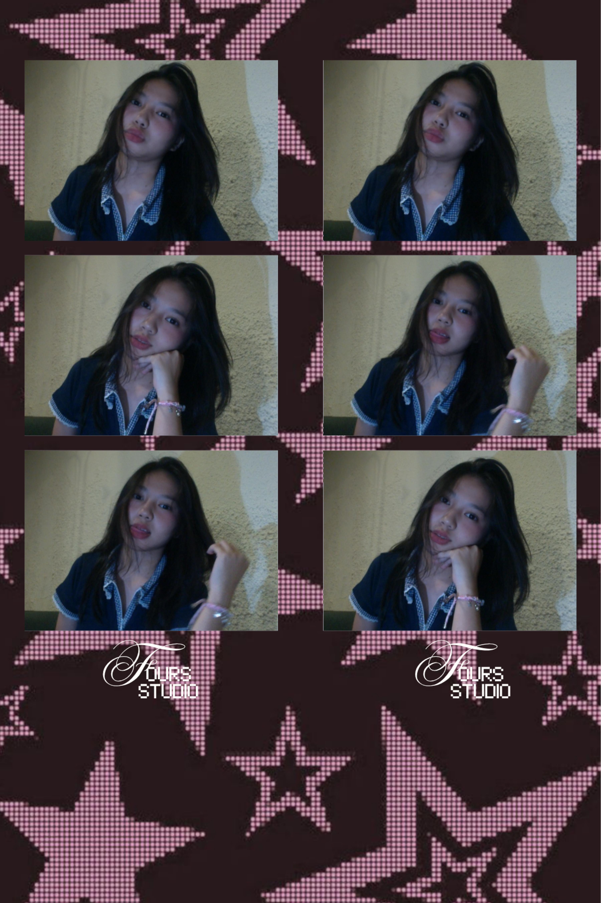
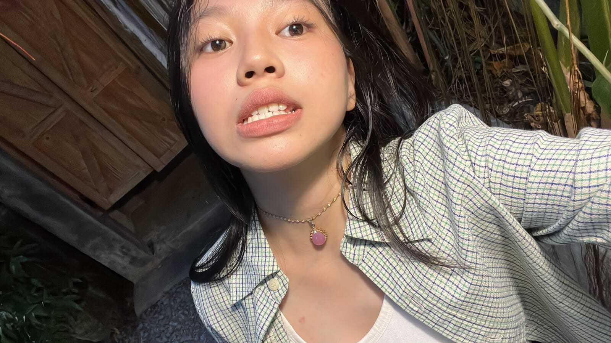
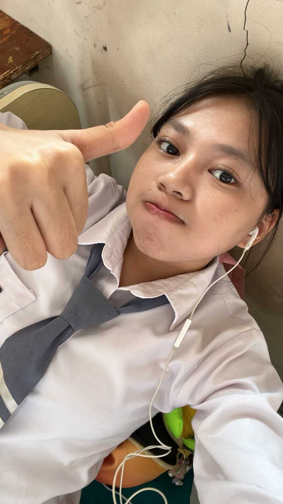
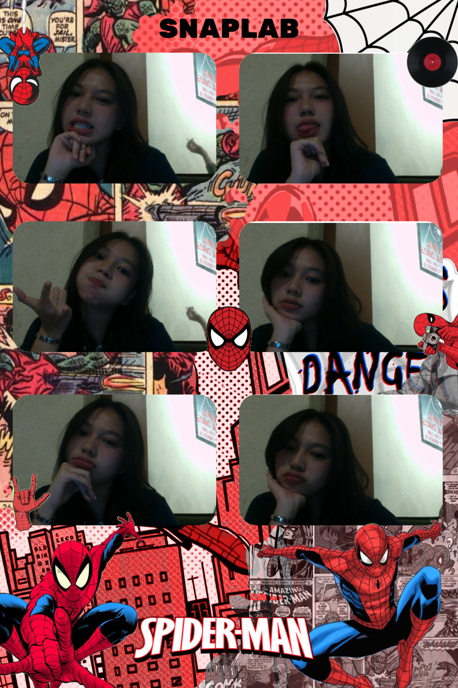
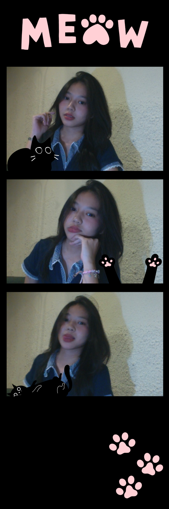
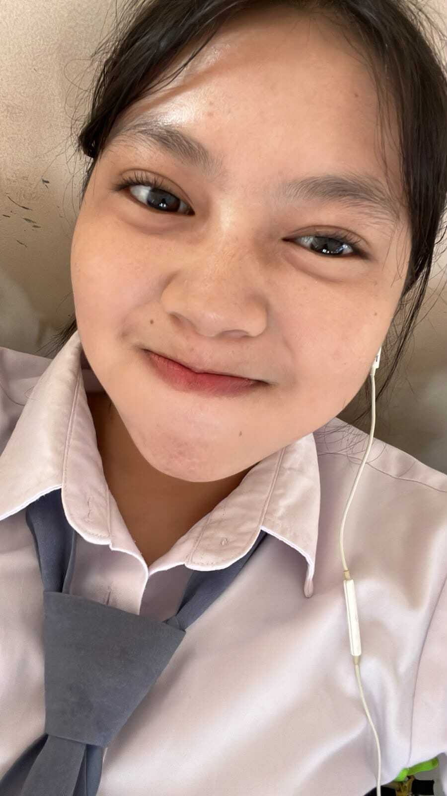

Do
Keep being you
Tetap jadi diri sendiri, tetap jadi cewe yang lembut, dan punya cara sendiri buat bikin dunia di sekitarnya jadi lebih indah. Nggak perlu jadi orang lain, karena kamu punya keunikan sendiri yang bikin kamu spesial.
Loading your little world...
For you, always
A little place for the beautiful girl.
Kara Althafunnisa
just a little girl with a big heart, a cute smile, and a thousand little dreams. 🌷💗 she loves pink things, sweet treats, pretty flowers, and all the little things that make life beautiful. 🎀✨




A little Things about you
kara suka banget sama matcha, first one is matcha sobr, and the second matcha mana dimana the third is matcha laidback, and the last one is matcha tomoro.
kara juga suka americano loh, kara suka americano fore, daja sama buatannya ija itu katanya wkwk.
kara suka banget sama pink, anything about pink, kara suka dubai cuwi nya savor katanya, eh dia juga suka sama lagu panasea, makanya websitenya make lagu panasea, dia cewe pinter loh, she's princess, katanya si dia suka banget di panggil alta karena gada yang panggil dia alta katanya.
Kara gak terlalu suka sama stroberi dan kacang-kacangan yang ukurannya gede-gede katanya.
dia juga gak suka kepanasan, kalo kepanasan rasanya kayak sumala. terus dia juga sebenernya gak suka disakiti, karena dia gak mau ada hal yang bikin hati dan kepercayaannya ikut rusak.


Things to remember
Tetap jadi diri sendiri, tetap jadi cewe yang lembut, dan punya cara sendiri buat bikin dunia di sekitarnya jadi lebih indah. Nggak perlu jadi orang lain, karena kamu punya keunikan sendiri yang bikin kamu spesial.
Jangan nangis nangis terus, karena gak semua hal bisa kamu tangisin, u look so sad when you cry, and i know you are strong enough to face everything, so please don't cry a lot, okay?
Keep being kind, even when the world doesn't always treat you the same way. Stay soft, keep your heart warm, and never be afraid to show the sweet and lovely person you are. You don't have to be perfect to be special, just keep being you.
Terkadang yang paling penting bukan terus-terusan menahan semuanya sendirian, tapi belajar buat lebih peduli sama perasaan diri sendiri. Kamu nggak harus selalu terlihat kuat atau pura-pura baik-baik aja cuma karena nggak mau bikin orang lain khawatir. Kalau capek, istirahat, kalau sedih, nggak apa-apa buat nangis, dan kalau ada sesuatu yang bikin kamu nggak nyaman, kamu berhak buat mengakuinya. Jangan terlalu sibuk memahami perasaan orang lain sampai lupa kalau perasaan kamu sendiri juga penting. Kamu juga pantas didengar, dimengerti, dan diperlakukan dengan baik, jadi jangan lupa buat kasih diri sendiri waktu dan ruang untuk merasa bahagia. Pelan-pelan aja, ya, kamu nggak harus menyelesaikan semuanya sekarang, yang penting jangan sampai kamu terus-terusan mengabaikan diri sendiri demi membuat semua orang merasa baik-baik aja.
ada dunia kecil yang penuh warna pink, secangkir matcha, dan lagu Panasea yang selalu punya cara sederhana untuk membuat hari terasa lebih indah.
seseorang dengan hati yang baik, yang mudah tertawa, tapi juga mudah menangis. yang terkadang terlihat baik-baik saja, meski ada banyak hal yang disimpan sendirian.
bukan karena terlalu lemah untuk menghadapi dunia, hanya saja, ada perasaan yang tak mudah dijelaskan dengan kata-kata. ada hal kecil yang bisa membuatnya bahagia, dan ada hal sederhana yang diam-diam melukai hatinya.
ia hanya ingin disayangi dengan tulus, didengarkan tanpa merasa berlebihan, dan diperlakukan dengan lembut tanpa harus takut akan datangnya luka.
semoga hati baik itu selalu menemukan alasan untuk tersenyum, semoga hal-hal kecil tetap menjadi sumber bahagianya, dan semoga ia tak pernah kehilangan dirinya sendiri hanya karena seseorang tak tahu cara menjaganya.
untuk hatimu
Pilih kartu kecilnya. Aku tinggalkan beberapa kata untukmu, untuk perasaan apa pun yang ada di hati kamu hari ini. ♡